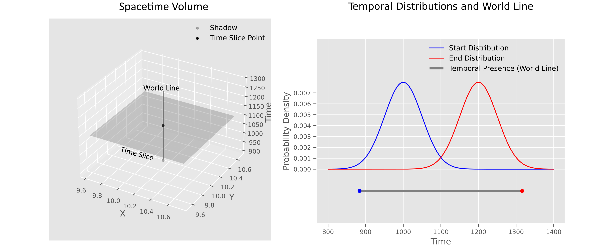
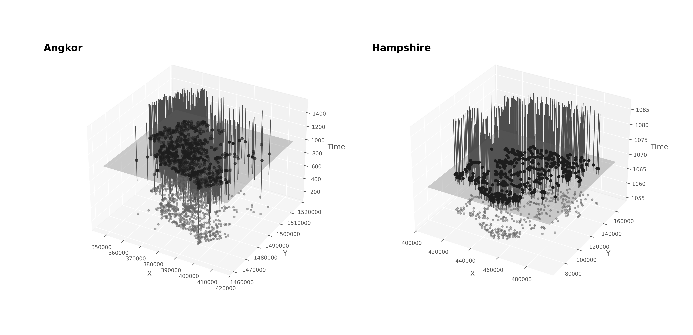
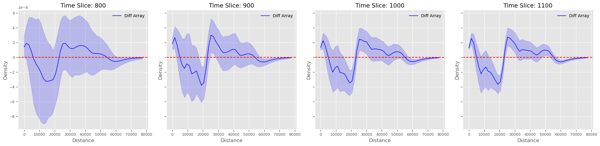
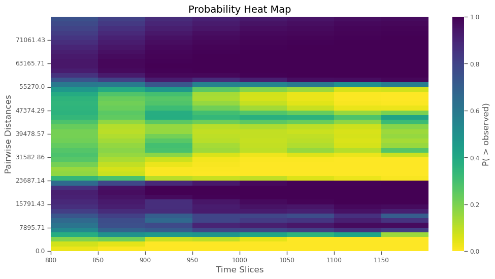
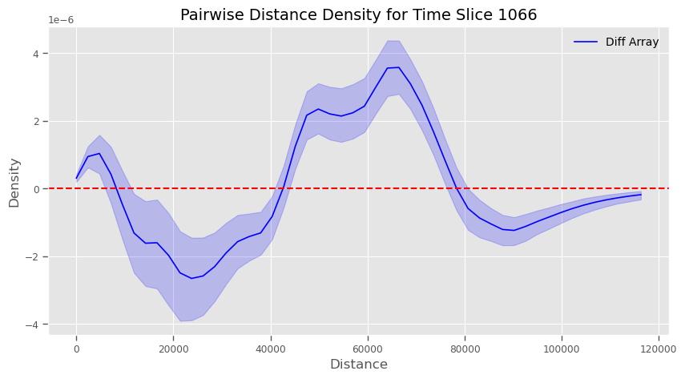
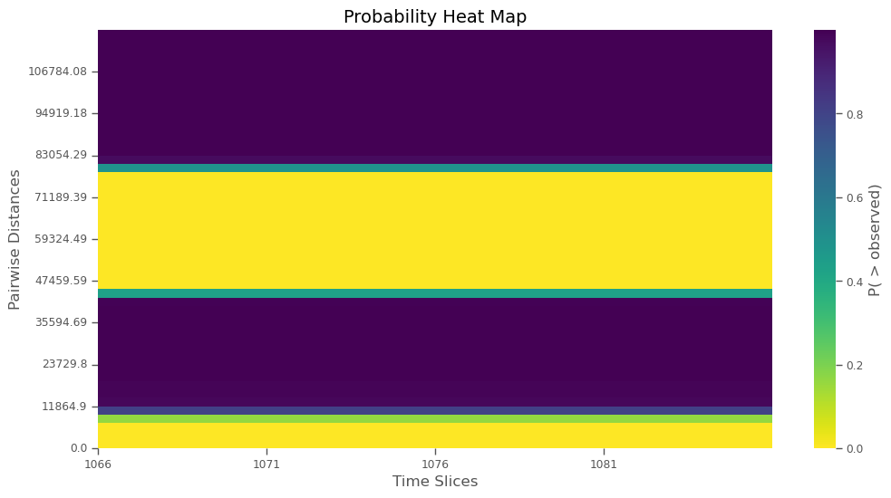
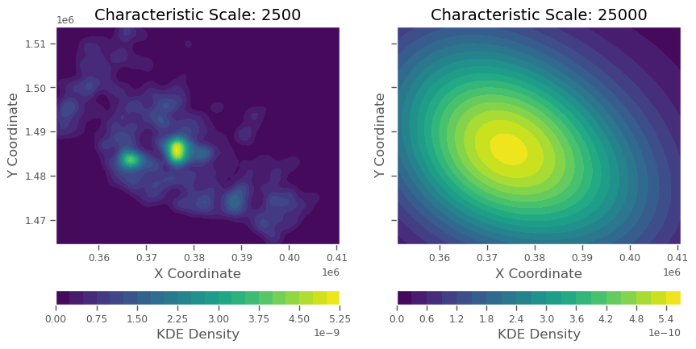
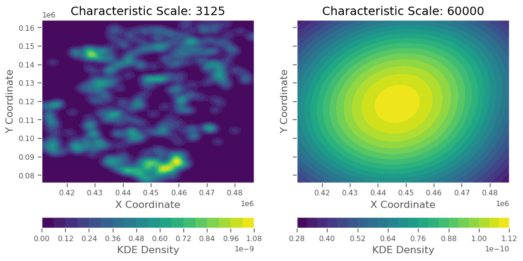
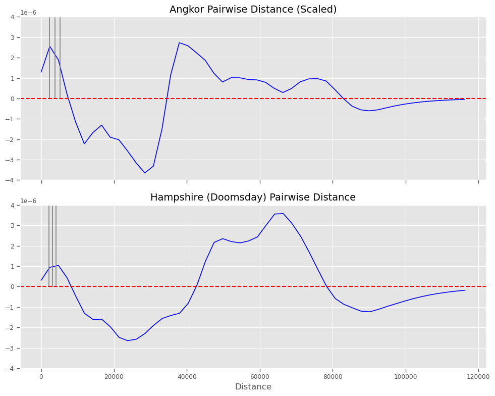

Spacetime Point Pattern Modelling of Angkor with ChronoCluster
Abstract
Angkor, Cambodia (c. 800–1400 CE), is often considered a primary example of ancient low-density urbanism, sometimes referred to as ‘agro-urbanism.’ Unlike high-density urban centers, such as medieval market towns or famous Early Bronze Age Mesopotamian cities like Uruk, agro-urban settlements integrate urban and agricultural spaces without clear boundaries. Despite the conceptual distinction between these different forms of urbanism, few studies have quantitatively evaluated Angkor’s classification or investigated the spatial structure of ancient low-density agro-urban settlements more broadly. In this study, we applied a novel spatial point-pattern analysis, implemented in an open-source Python package called ChronoCluster, to examine the structure of Angkor and compare it with medieval Hampshire, England, based on historical Domesday survey data (c. 1086 CE). Our analysis accounts for spatial and temporal uncertainties, and change over time in point pattern configurations, enabling continuous modelling of spacetime patterns in archaeological settlement systems. Surprisingly, we found striking structural similarities between Angkor and Hampshire, challenging the notion of distinct urban forms in the past. We hypothesize that Angkor’s urban system reflects a scaled-down version of Hampshire’s, shaped by differences in modal transportation (horseback vs. pedestrian). These findings raise broader questions about the differentiation of urban phenomena and suggest a scaling relationship between transportation speed and urban settlement structure.
Introduction
Angkor—political and economic epicentre of the eponymous Angkorian World from 802–1435 CE—challenges conventional definitions of urbanism. Renowned for its iconic religious complexes like Angkor Thom and Angkor Wat, its intricate and sprawing networks of canals, ponds, and reservoirs, and its overgrown temple ruins, Angkor is a mosaic of domestic, religious, and agricultural features. The last 20 years of survey has revealed more than 1400 temples, embedded among rice paddies and residences, covering at least 1000 km^2. The mosaic of domestic, religious, and agricultural features along with its apparently low population density, has led some scholars to argue it represents a distinct kind of urbanism—low-density agro-urbanism—that differs meaningfully from the familiar Classical Mediterranean, Near Eastern, and Medieval European kind featuring high-density, circumscribed population centres separated from their low-density agrarian hinterlands. However, the structural distinctiveness of Angkor has never been quantitatively evaluated. In this study, we leverage novel spatial and temporal analytical tools to compare the settlement structure of Greater Angkor with a contemporaneous benchmark: Medieval Hampshire, England. By examining spatial point patterns and their evolution over time, we sought to evaluate whether Angkor exemplifies a distinct urban phenomenon or reflects broader patterns of distributed socio-economic organization more common to ancient urban societies than previously recognized.
Background
Angkor was the capital of a polity that, at its zenith during the 10th-15th centuries CE, encompassed present-day Cambodia and extended into Thailand, Laos, and Vietnam (Figure 1). Lacking definitive boundaries, the archaeological region known as Greater Angkor occupies a massive 1000 km2 plain along the northeast shore of the Tonlé Sap, Southeast Asia’s largest freshwater lake. This monsoon-fed lake expands during the wet season (September-December) rising up to 10 m in depth and expanding to around 16,000 km2. Angkor sits at the intersection of three monsoon systems: the Southwest Monsoon (summer), the Northeast Monsoon (winter), and the Intertropical Convergence Zone (ITCZ). These systems give rise to dramatic wet-dry cycles that oscillate throughout the year, replenishing the Tonlé Sap and nearby tributaries of the Mekong river, which runs through Cambodia from the northeast to southwest, coursing south of Angkor before emptying into the Gulf of Thailand.
The environment created opportunities and challenges for ancient Angkorians. The lake and rivers were teeming with fish, snails, and crabs, and the seasonal rains enabled expansive rice agriculture. Together these staples fed the Angkorian population, which may have grown to 750,000 people at Angkor’s peak. Droughts and floods, however, were a persistent challenge throughout the roughly 600-year Angkorian period of the region’s history, necessitating the development of a sophisticated and intricate hydro-engineering system of canals and reservoirs. This complex network of hand-dug waterways, ponds, and reservoirs is immense with the largest reservoir, the West Baray, having an area of over 17 km 2, equivalent to about five New York City Central Parks. The size and complexity of the system led Groslier to characterize Angkor as a “hydraulic city”, deeply dependent on intricate water management for survival. It was also architecturally phenomenal, with the iconic Angkor Wat temple complex covering an area of about 1.6 km 2—four times larger than the Vatican—standing as the largest religious complex in the world. In the mid-15th century, though, Greater Angkor went into decline and much of the region was abandoned to be reclaimed by the jungle while the hydraulic infrastructure collapsed. When Europeans arrived in the 17th century they encountered fantastically overgrown temple ruins that have since become famous, practically emblamatic, visual archetypes for ‘lost civilization’ narratives.
MAP GOES HERE 
Angkor’s scientific value is as immense as its temples and reservoirs, but its most transformative contribution to urban research lies in challenging the boundaries defining cities. Writing in the early-to-mid 19th century, scholars thought of Greater Angkor (though not using that term, which came much later) as analogous to high-density, discrete cities of Europe and Mesopotamia. Angkor Thom, a huge rectilinear temple complex surrounded by a moat, was thought to be a discrete civic-ceremonial urban centre associated with the three largest reservoirs, the East Baray, West Baray, and Jayatataka. Scholars at the time saw only the most massive temple complexes, like Angkor Thom and Angkor Wat (which was never abandoned) separated by jungle like a civic-cermononial archipelago. Smaller community-level temples were known from pedestrian surveys, but most of the archaeology was covered by jungle or modern farmland. Aerial surveys in early 20th century then provided the first glimpse of the full extent of Angkor and facilitated the production of the first comprehensive map of the Angkor region. The images stirred debate about the structure of the settlement and where to draw the official boundaries of the city. Decades later, after a devastating revolution and civil war, archaeological research began again and the first comprehensive, modern, GPS-aided survey of Angkor’s structures was completed by Damian Evans in early 2000s. Evans and his team then conducted the first aerial Light Detection and Ranging (LiDAR) survey as part of the Greater Angkor Project. The LiDAR was able to virtually strip the tree cover from the land. It enabled the creation of a high-resolution surface model of practically every building foundation, worn path, ditch, and mound. The LiDAR map was able to, for the first time in four centuries, reveal the entire settlement area as a continuous, integrated whole. As enlightening as it was, though, the LiDAR data also raised new questions. It became clear that there was no obvious way to delineate urban from rural or to clearly demarcate the edge of the settlement. It revealed no discrete fall-off in structure density, nor the presence of a constructed boundary. Angkor appeared to be a mixed-use settlement region combining clearly religious, ceremonial, residential, hydrological, and agricultural features in a sprawling 1000 km2 agro-urban complex.
The changing view of Angkor, both physically through LiDAR and metaphorically in how we conceptualise it, contributed to the recognition of a potentially distinct form of ancient urbanism: low-density agro-urbanism. Cities have long been a subject of archaeological inquiry, recognized early on as a distinct type of human settlement. Writing in 1950, Childe defined cities as settlement with a characteristic set of traits, including large populations, social stratification, centralized political and religious institutions, monumental public architecture, economic specialization, and civic administration with record keeping (i.e., writing). Notably, absent is agricultural space, precisely because it has long been thought of as a defining feature of rural spaces outside city limits by definition—‘urban’ and ‘rural’ originate in Latin, highlighting the antiquity of the distinction in western thought. Familiar ancient and modern examples would seem to fit from Uruk in Mesopotamia, to Chang’An in China, to Medieval Winchester, and modern London. But, decades of archaeological research—especially in regions like the Maya lowlands, Sri Lanka, and Angkor—produced exceptions that defied these criteria. And while urban archaeological theory has advanced well beyond Childe’s checklist, Angkor and similar sites continue to challenge ideas about urban phenomena, exhibiting dispersed populations, low building densities, and civic-ceremonial structures integrated with agricultural lands. These conspicuous exceptions led Roland Fletcher to propose the concept of low-density agro-urbanism, a fundamentally different model of urban settlement that blends rural and urban functions across expansive landscapes. This idea has gained traction and Angkor is widely regarded as a canonical case of low-density agro urbanism.
Current Project
While compelling, the low-density agro-urban model has not yet been directly evaluated with quantitative comparisons. Beyond rough estimates of relative densities and qualitative comparisons of settlement plans and maps, there is currently no sense of precisely how—or even if—the novel ‘low-density agro-urban’ class differs structurally from the archetypal dense, delineated ‘urbs-ex-rural’ (urban distinct from rural) class. Consequently, the degree to which the Greater Angkor area represents a distinct type of urbanism is uncertain. Here, we present a study in which we quantitatively compare the structure of Greater Angkor to a benchmark case, Medieval Hampshire. The fundamental unit of analysis for our study was point data where each point represented a unit of socioeconomic productivity in the relevant region and its associated community. Using advanced new spatial analysis tools implemented in the ChronoCluster Python package, we conducted a multi-scalar point pattern comparison based on a spacetime archaeology paradigm.
Spacetime Archaeology
Archaeological data are inherently spatiotemporal and come with significant chronological uncertainty. Substantial methodological work has been done in an effort to address the challenges posed by temporality (change or stability in patterns over time) and chronometric uncertainty. The main approaches emerged out of aoristic analyses used to model crime events having occurred in an uncertain temporal window, and they approach the problem of chronometric uncertainty by binning events into time-bins where bin widths reflect the uncertainties. In contrast, analogous to the way spatiotemporal data area handled in Physics, we adopt a more continuous spacetime perspective. In this framework, each point (e.g., archaeological site location) is an ‘event’ that has not only three spatial coordinates (\(x\), \(y\), \(z\)) but also a temporal coordinate pair (\(t_1\),\(t_2\)), representing its existence in the time domain. This approach allows us to vizualize and analyze the spatial and temporal dimensions of archaeological data, considering when each point existed and the uncertainties associated with its dating. An event’s persistence in spacetime—its ‘world line’—can be represented by a trajectory within a 4-dimensional spacetime volume, which of course can only be visualized by reducing or marginalizing at least one dimension. We can then calculate the probability that a point existed in any given time-slice within a spacetime volume and, thereby, analyze a temporally varying, chronometrically uncertain spacetime point pattern.

Medieval Hampshire as Comparator
With this approach, we compared the point pattern of site locations within the Greater Angkor area to a comparable relatively contemporaneous dataset from Medieval Hampshire. The Angkor dataset derives from decades of traditional and remote sensing surveys, while the Hampshire dataset was sourced from an open database version of the Domesday Book.
Medieval Hampshire was selected because the point locations in both cases—Angkor and Hampshire—are sufficiently analogous to warrant direct comparison despite many specific cultural, social, political, and economic differences between the regions. The point locations at Angkor primarily represent ‘community temples,’ mostly Hindu (Shaivite and Vaishnavite) temples constructed between Angkor’s founding by Jayavarman II, who declared himself ‘chakravartin’ (universal monarch) in 802 CE, and the political shift to Phnom Penh in 1435 CE. These temples, commissioned by elites (including the king), served multiple functions: agricultural management (primarily rice production), labor organization, trade facilitation, taxation, and redistribution. Temple staff and agricultural workers received rice allotments, and the temples functioned as centers of daily activity, administrative governance, and religious life. Similarly, the point locations in Medieval Hampshire, drawn from the Domesday Book, primarily represent manorial estates and associated settlements. Compiled in 1086 CE under William the Conqueror, the Domesday Book records estates typically held by lords or church institutions. These estates, like Angkor’s temples, acted as socioeconomic, political, and administrative hubs, overseeing agricultural production, labor organization, trade, and support for superior elites (primarily military levy initially under feudal obligations, but later direct taxation in the form of the ‘geld’). Additionally, Hampshire, while one of many Medieval English counties in the Domesday Book, is among the counties also closest in physical size to Angkor while still containing a roughly contemporaneous major political and economic centre (Winchester). London and its surrounds would have perhaps been even better given that William the Conqueror moved the seat of power from Winchester to London. But, the particulars of his arrangement with London meant much of it was excluded from the Domesday survey.
| Comparative Aspect | Manorial Estates (Medieval Europe) | Community Temples (Angkor) |
|---|---|---|
| Primary Function | Feudal economic and social organization | Religious worship, community integration, agircultural production |
| Key Contribution to Rulers | Military service, rents, and dues | Rice and labor contributions |
| Core Role | Local production and redistribution; religious for church-owned estates | Local production and redistribution, along with ritual and spritual services |
| Connection to State | Feudal hierarchy linking lords and vassals | Centralized administration under the king (degree of centralization varying through time) |
| Symbolism | Feudal order legitimized by divine right | Sacred cosmology and royal divine mandate |
| Autonomy | Local judicial and administrative autonomy | Centralized integration into royal networks |
| Economic Foundation | Mixed agriculture/livestock, markets | Rice agriculture, craft production, some external trade |
| Infrastructure Supported | Castles, manorial courts, and local defense | Temples, irrigation systems, and state projects |
| Cultural Context | Secular with some religious undertones; overtly religious for church-owned estates | Deeply rooted in Hindu-Buddhist traditions |
| Type of Obligation | Military and economic | Religious and agricultural |
Given the foregoing, we argue that the similarities between Medieval Hampshire’s manorial estates and Angkor’s temples provide us with a solid basis for a novel comparison. Both datasets reflect spatial patterns of centralizing institutions embedded in urban-agrarian landscapes yet linked to larger, more important centers—e.g., Angkor Thom/Wat in Greater Angkor, and Medieval Winchester in Hampshire. Crucially, it is the spatial distribution and density of community temples across Greater Angkor that gave rise to its classification as low-density urbanism. By contrast, Hampshire has not been described as low-density urbanism but instead represents the archetype of ‘urbs-ex-rural’ urbanism of the European Middle Ages. This distinction underscores the potential value of the Domesday Book data as a contemporaneous comparator for Angkor. Importantly, these data also allow for bottom-up comparisons of urban processes rather than focusing solely on whether a settlement appears—by modern standards—to have clear boundary. This approach aligns well with modern studies of urban areas using bottom-up proxies (e.g., nighttime light intensity as viewed from space) to empirically identify, evaluate, and study urban areas as opposed to basing studies on top-down delineations like political/administrative boundaries.
Comparing Spatial Structure
The core of our comparison involved the pairwise distance density (PDD) function. The PDD is a foundational tool in spatial point-pattern analysis, providing a multi-scalar characterization of patterns by capturing the distribution of distances between all point pairs. Unlike derivative metrics such as Ripley’s K function or the pair correlation function, used to summarize clustering with single statistic or index, the PDD directly reflects the spatial structure of a dataset. It can reveal clustering, uniformity, or repulsion across spatial scales. The PDD is constructed by measuring all pairwise distances in the set and then estimating the distribution of distance measurements either discretely, with a histogram, or continuously with a kernel density estimator (KDE). This density function can then be compared to a given ‘null’ hypothesis for the expected pairwise distance distribution under some theoretical condition, like complete (uniform) spatial randomness (CSR) or another theoretically informed baseline. Deviations of the empirical PDD from the appropriate null—that we refer to as \(\Delta\)PDD and define as \(PDD_{empirical} - PDD_{null}\)—indicate statistically significant features of the distribution of pairwise distances. Clustering and/or repulsion (spatial structure) at different distances, corresponding to different spatial scales, is reflected in the \(\Delta\)PDD by statistically significant peaks/troughs (see Methods for statistical details). The modes/peaks in the \(\Delta\)PDD, then, represent ‘characteristic spatial scales’ at which we observe patterning distinct from the null with implications for the process that gave rise to the data—one kind or another of urbanism in the present case.
Our spacetime framework, implemented in the ChronoCluster package, extends the PDD (and therefore \(\Delta\)PDD) to incorporate temporality and chronometric uncertainty. Each point in the datasets we examined were assigned start and end date distributions to situate them in spacetime volumes. Angkor’s temple locations had either fixed dates drawn from epigraphy or normally-distributed date distributions estimated with a recently published Bayesian regression model, while the Hampshire point locations had fixed start and end dates defined by the interval between the conquest of England in 1066 CE and the finalization of the Domesday survey in 1086 CE. For the latter, naturally, there were no temporal dynamics to evaluate, really, because the points all had the same fixed start and end dates, but we performed the full analysis anyway to be consistent with how the Angkor data were treated and provide readers with complete demonstration of the approach and tools.
The PDDs were estimated across a series of time slices for each dataset/region and then compared to both a CSR and BISE null model relevant to the corresponding region. Given a time slice, we sampled the start and end date distributions for each point to determine probable temporal bounds. Points with probable world lines intersecting the time slice constituted one set of points for that slice. From this set, a PDD\(_i\) was estimated and stored, where \(i\) indexed a probable point set. This process was repeated 1,000 times to generate an ensemble of probable PDDs, capturing the temporality and chronological uncertainty within the pattern at each time slice. We repeated this approach for each region and for several time slices to evaluate changes in the PDD over time in each case. These results were visualized as heatmap surfaces, illustrating the temporal dynamics of the spatial patterns. We then calculated a series of \(\Delta\)PDDs for each region by comparing the empirical PDDs to CSR and a baseline informed spatial expectation (BISE) defined by a single 2D normal distribution of points. We estimated the covariance and mean (coordinates) of the BISE from the empirical point data, allowing us to highlight variation within the overall cloud of points inside each study area. Next, we created temporally weighted spatial kernel density estimates (\(\tau\)-KDEs), where the weighting for each observation reflected the probability of its presence within a given time slice. Finally, to enable direct comparison, we selected representative PDD time slices from the Angkor and Hampshire datasets. By applying this novel spacetime framework to the point patterns of Greater Angkor and Medieval Hampshire, we aimed to uncover the spatial—and, for Angkor, temporal—dynamics of these settlement systems and test whether Angkor truly represents a distinct form of urbanism.
Results
Our results revealed some statistically features of the PDDs in both regions, some differences between the regions in terms of these features, and remarkable similarity in the overall structure of the point processes at Angkor and Hampshire. We divided the results up into subsections following our analytical process moving from intra-regional patterns to the final direct inter-regional comparison.
Spacetime Distributions
Simply plotting the point from each region in 3D spacetime volumes was revealing. In the case of Angkor, as shown in FIG, while there was variation in the point distribution over the first century or so resulting from the increase in temple construction, there was no obvious evidence of changes in the pattern after about 1000 CE. Additionally, we can see that there does appear to be a general tendency to overall, large scale clustering within the study region, creating the impression of a large, more-or-less oblong single major point cloud. Similar patterns were observed with the point data from Hampshire. These general patterns support our use of the 2D normally-distributed BISE in each case.

\(\Delta\)PDD Series and Heatmaps




\(\tau\)-KDEs


Discussion
Our analysis revealed striking similarities between the two regions, challenging claims about the distinctiveness of Angkor’s urbanism. The \(\Delta\)PDD heatmaps and timeslice plots clearly show that the point patterns from both regions contain two primary pairwise distance modes. One mode occurs at the shorter distance scales and the other at much longer scales with the two modes separated by a distinct trough—a pattern that recurs in almost all of the counties with data available in the Domesday book (see Supplementary Figures). The second mode, in both cases, corresponds roughly to the radii of the overall cloud of points in each region, with Hampshire’s mode occurring at a much larger inter-point distance corresponding to its much larger overall area. Angkor’s \(\Delta\)PDD series indicates this pattern was probably observable from the beginning of the Angkorian Period, although the spatiotemporal uncertainties make it impossible to claim statistical confidence until about 900 CE. From then on, the pattern at Angkor appears to have been well-established, with little variation throughout the 10th to 15th centuries. This is perhaps surprising because there was a well-known construction boom from the 10th to 13th centuries during which time well over 1000 temples were constructed. It seems that the logic of spatial organization—today often thought of as representing low-density agro-urbanism—was in place from the founding of the first temples at Angkor. And, importantly, that spatial logic defined the trajectory of urban-rural development for centuries. While we can say nothing at the moment about the temporality of the spatial pattern in Medieval Hampshire, owing to data limitations, we observed the same pronounced wave in Hampshire’s \(\Delta\)PDD. The convergence of the two systems on this pattern suggests a parallel underlying spatial logic was determining the locations of the both community temples and manorial estates, albeit at different maximum spatial scales.
The similarity of the patterns led us to an unexpected insight: It is possible that Angkor’s spatial patterning constitutes a scaled-down version of Hampshire’s patterning. After some rough guesses, we determined that the patterns nearly overlap when Angkor’s pairwise distance plot is scaled by 1.5-2 times (see FIG). As the plot indicates, the patterns are indeed remarkably close. This prompted us to run a follow-on analysis to compare the smaller-scale \(\Delta\)PDD peaks more systematically. We focused on the smaller-scale peaks because the larger scale ones (larger pairwise distances) pretty clearly indicate the overall width of the point distributions, meaning that differences would simply reflect the different sizes of the two regions. To make the comparison, we used an algorithm to identify the first, smaller-scale peaks in each \(\Delta\) PDD. We then calculated the ratio of the identified peak location values across the \(\Delta\)PDD ensembles to produce a ratio distribution for the first peak locations that represented temporlity, chronological uncertainty, and uncertainty from simulated sampling used to produce the null hypothesis baselines for each region. This ratio distribution would be centered on one if the peaks were in the same location. As it is, the peaks are clear not in the same locations and the mean of the ratio distribution indicates that Hampshire’s first \(\Delta\)PDD peak is located at a pairwise distance that is between 1.5 and 3 times that of Angkor’s first peak (95% CI). Moreover, the ratio distribution is well-behaved with a clear, single mode that could be approximated fairly well by a normal distribution, suggesting that the probable ratios really are concentrating around a single well-defined value. These results suggest to us that the spatial logic behind the distribution of Angkor’s community temples and the spatial logic underpinning Hampshire’s manorial estate locations reflect parallel processes scaled by some local, idiosyncratic effect.

With the foregoing in mind, three potential functional explanations can be proposed for the observed scaling. The first explanation lies in environmental constraints. Angkor’s landscape is defined by a flat floodplain with minimal ruggedness, sparse natural watercourses, a massive lake, and extensive rain-fed reservoirs and ponds that provided distributed, reliable access to water. This open, low-relief terrain may have facilitated denser settlement patterns while maintaining sufficient proximity to arable land and water resources. In contrast, Hampshire’s gently rolling hills, denser river networks, and reliance on rivers and streams for water access may have constrained settlement locations, leading to more discrete nodes separated by greater distances. The second explanation concerns differences in land-use efficiency. Angkor relied heavily on wet-rice farming and aquaculture, both of which are highly efficient in terms of caloric yield per unit area. This efficiency allowed for smaller, densely packed settlements to support significant populations. By comparison, Hampshire’s mixed agriculture and husbandry required larger parcels of land per capita to achieve the same caloric output. Consequently, settlements in Hampshire may have been spaced farther apart to accommodate the larger catchment areas needed for agricultural production. The third explanation involves differences in transportation modes and their corresponding effective travel distances, which may be the most critical factor in the observed scaling given that it relates directly to physical intersite distances in a connected urban network.
The last of these explanations—the role of effective modal transport distance/speed—is also one for we have readily available quantities to use for a summary comparison and historical or iconographic evidence to draw on for context, justifying deeper consideration here. Walking was likely the primary means of travel in both Angkor and Hampshire for local daily movement and for most people. However, the availability and use of secondary transport modes, such as horses and boats, likely differed significantly. In Medieval Hampshire, and indeed throughout Medieval Europe, horses were widely used for overland travel, hauling, and transport, especially after 1100 CE, and particularly between nodal settlements for merchants, messangers, meeting fuedal obligations, elites overseeing their various estates, and the itinerant kingly court. Horses enabled travel at speeds approximately twice that of walking, facilitating greater separation between manorial estates. This is reflected in Hampshire’s 3000 m average spacing, supported by historical accounts of typical travel times between estates, market towns, and villages. At Angkor, while iconographic evidence suggests horses were known, they were not widely used. Boats were preferred, given the extensive canal network, as reflected in clustering research on Angkor’s temples, historical accounts, and the traditional use of boats in Cambodia today. Horses were impractical for overland movement in the dense tropical forests of Cambodia, where soft ground, severe flooding, and high heat posed significant challenges. Additionally, horses struggle to thrive on rice-based diets and require specialized care, making them unsuitable for transport, hauling, or communication between socioeconomic nodes. Their presence at Angkor was likely limited to elite prestige, rather than practical use. As a result, transport and movement at Angkor relied predominantly on walking and traditional dugout canoes, neither of which could match the speed and flexibility afforded by horses in Hampshire. This difference in transportation efficiency likely explains the tighter clustering of settlements at Angkor compared to Hampshire.
| Mode of Travel | Average Speed (km/h) | Daily Distance (km) | Approx. Active Travel Time | ** Reference** |
|---|---|---|---|---|
| Walking | 4–5 | 20–30 | 5–8 hours | |
| Ox-Drawn Cart | 2–4 | 10–15 | 5–7.5 hours | |
| Horseback (ambling) | 6–8 | 40–50 | 5–8 hours | |
| Horse Courier (relay) | 10–15 | 80–120 | 6–8 hours | |
| Canoe (Angkor) | 3–5 | 30–50 | 6–10 hours | |
| Barge (Angkor) | 2–4 | 20–30 | 5–8 hours |
To further appreciate the potential role of transportation in the observed scaling, we can compare effective travel distances across modes of transport in Angkor and Hampshire. In Medieval Hampshire, horses were widely used for overland travel, enabling speeds of approximately 6–8 km/h when ambling and allowing for effective daily travel distances of 30–50 km. By contrast, Angkor relied predominantly on walking, with typical speeds of 4–5 km/h and effective daily ranges of 20–30 km. Dugout canoes, while practical for navigating Angkor’s extensive canal network and reservoirs, probably moved at slower speeds of about 2–3 km/h in line with modern estimates for non-competitive canoeing, limiting their practicality for long-distance travel. Though useful for bulk goods or specific tasks, these boats were not as efficient as horses for general transport and may have further constrained the functional range of settlements. There is also historical evidence suggesting that even canoeing on rivers at Angkor was not always possible, which may explain the effort ultimately deployed to build an extensive regional road network. This difference in transport efficiency likely contributed to the denser clustering of settlements at Angkor, where community temples were spaced approximately 1500 m apart, compared to the ~3000 m spacing observed in Hampshire. Notably, the scaling ratio (~1.5–2) between the two regions \(\Delta\)PDDs closely aligns with the ratio speeds adn/or effective daily distances of horseback travel and walking. This suggests that differences in transport modalities, particularly the use of horses in Hampshire versus the reliance on slower modes like walking and canoes in Angkor, may partially explain the observed spatial patterns. These estimates highlight the potentially critical role of transportation efficiency in shaping the scale and organization of low-density urban networks, with technological differences translating directly into measurable variations in settlement spacing. Thus, it seems entirely plausible that the low-density agro-urban phenomenon recognized at Angkor is actually not indicative of a unique kind of urbanism, as has been suggested, but rather the effect of idiosyncratic scaling on fundamental urban dynamics.
That the ratios of these transport variables happen to align so well with the observed scaling gives rise to a general, quantitative hypothesis. Specifically, the relationship can be expressed as:
\[ \frac{v_1}{v_2} \approx \frac{\Delta PDD_{1, first peak}}{\Delta PDD_{1, first peak}} \] where \(v_1\) and \(v_2\) represent the average effective travel speeds (or daily distances) in two given urban settlement regions, and \(\Delta\text{PDD}_1\), first peak and \(\Delta\text{PDD}_2\), first peak represent the locations of the first pairwise distance density peaks for regions 1 and 2, respectively. If this relationship holds true across multiple low-density urban contexts, it would suggest a universal scaling principle linking transport efficiency to settlement spacing. Testing this hypothesis in other regions with distinct transport technologies and environmental conditions could provide powerful insight into the underlying spatial logic of urban organization. Such analyses would also refine our understanding of how local transportation constraints shaped regional settlement networks, offering a quantifiable framework for comparing urban systems across diverse historical and ecological contexts.
Building further on this hypothesis, we propose a qualitative prediction that regions with limited historical use of horses—particularly in tropical environments—will exhibit urban settlement networks with lower pairwise distances compared to regions where horses played a significant role in transport. Archaeological and historical evidence indicates minimal, if any, use of horses in many tropical regions until the colonial era, which aligns with genetic findings showing a relative paucity of horse lineages carrying the “gait keeper” variant (DMRT3_Ser301STOP) in these areas. This genetic mutation, which facilitates ambling gaits, was actively selected for its efficiency and comfort in long-distance travel. The mutation was first identified in horse remains from Medieval England dated to between 850 and 900 CE and rapidly spread to regions such as Iceland, where the absence of roads further amplified the value of ambling horses for travel and transport. The scarcity of this mutation in tropical regions, coupled with the environmental constraints on horse use in these areas, likely restricted effective travel ranges, resulting in denser clustering of settlements. Such transport limitations may account for the apparent differences in urbanism between tropical and temperate regions. What are often described as “low-density” tropical urban centers may, in fact, represent relatively high-density urban networks, scaled versions of urban systems in higher latitude regions where horses and their associated transport efficiencies were more prevalent. Testing this hypothesis across diverse ecological and historical contexts could refine our understanding of tropical urbanism and its relationship to transportation technologies.
While the findings and hypotheses presented here offer a provocative framework for understanding settlement scaling, several limitations need to be highlighted. First, the analysis relies on as-the-crow-flies pairwise distances between sites, which do not account for the effects of terrain, known or inferred transportation networks, or other landscape-specific factors that likely influenced effective travel distances. This simplification may obscure important regional nuances. Second, the estimates for transportation modality speeds are drawn from sparse historical records and modern analogues or generalized assumptions, which may not accurately reflect historical or archaeological realities in either region. For example, the relative frequency and efficiency of transport modes—such as horseback travel versus walking or canoeing—are poorly documented for both medieval England and Angkor, making it difficult to assess their precise impact on settlement spacing. Furthermore, differences in land-use strategies, including agricultural efficiency (calories per hectare) and total production capacity, remain only qualitatively addressed. These factors, which underpin settlement sustainability, could significantly influence the spatial logic of settlement placement and spacing. Lastly, assumptions about the socio-economic and political relevance of transportation modes—like how often specific modalities were used for daily or long-distance travel—remain speculative.
Addressing these limitations will lead to productive avenues for future research. Incorporating landscape-sensitive pairwise distance calculations, which factor in terrain and reconstructed or inferred transportation networks, would provide a more realistic picture of effective travel distances and their role in settlement spacing. Similarly, improving contextual estimates for transportation modality speeds in historical and archaeological contexts will require detailed studies, potentially including experimental archaeology. For instance, experiments with traditional Khmer dugout canoes in Cambodia could offer empirical data to refine speed and efficiency estimates for Angkor’s waterways. Comparative, on-the-ground, experiments on oxen- and horse-drawn carts in England could provide analogous data for medieval contexts that are currently not available in historic accounts (beyond rconstructions estimated from historical mentions of travel times between known locations). Beyond transportation, quantifying differences in land-use requirements and agricultural productivity—such as contrasting medieval England’s mixed agriculture and Angkor’s rice cultivation and aquaculture—would provide essential context for understanding the caloric basis of settlement networks. Finally, future research should seek to quantify the relative usage and relevance of different transportation modalities in each region, exploring their economic and political significance in defining inter-site distances and the ways in which there may causal feedback among all of the variables mentioned here. If explored, these potential research avenues would lead toa more nuanced and empirically robust framework for comparing ancient urban systems across diverse regions and time periods, and potentially contribute to an overarching, quantitative theory of urbanism and land-use co-evolution.
Methods
Data Acquisition and Preparation
Our analysis involved two sets of point data and some preparation in order to use the spacetime paradigm and ChronoCluster tools. In particular, we needed to assign start and end date distributions (reflecting potential uncertainty in the construction and abandonment dates, respectively) to each point location in the two datasets.
The first dataset consisted of 1431 community temple locations in the Greater Angkor area, 105 of which have foundation dates estimated directly using epigraphy and/or art and architectural assessments. We acquired the point data from the supplementary material of Carleton et al. and followed the methods of that study to estimate posterior age estimates for the foundation dates of the 1326 undated temples. We then estimated a mean and standard deviation from the posterior samples for each modelled foundation date. These parameter estimates were subsequently used to define normal distributions for the start times of the corresponding world-lines in the spacetime framework. The directly dated temples, in contrast, were assigned Dirac delta densities (constant dates, effectively) for their start times. Since no direct chronological information about temple or community abandonment are available for Angkor, we used Dirac delta densities to represent the end date distributions of all temples with the distributions centred on the historically defined political abandonment of Angkor at 1435 CE.
The second dataset consisted of 435 manorial estates located in Medieval Hampshire listed in the Domesday Book. Shortly after his victory over Harold II at the Battle of Hastings in 1066 CE, William the Conqueror commissioned a survey of England’s lands, aiming to strengthen Norman control and lay the foundations for his administrative reforms. The survey concluded in 1086 CE and results were compilled into the Domesday Book, which was composed of several volumes. Entries in the book pertain to manorial estates—economic, social, and administrative units of land, organized under the feudal system and directly controlled by a lord or the Catholic Church. The contents of the book were translated and digitalized in 2015 by scholars at the University of Hull and the National Archives, a process that included deducing the locations or manorial estates (down to 100m by 100m UK Ordinance Survey grid squares). We downloaded the raw data, including point locations, from the University of Hull website for analysis. We then isolated the points listed as within the county of Hampshire and cleaned a couple instances of points well outside the county having been duplicated and mislabeled as belonging to ‘Hampshire’—this problem was first noticed because the maximum inter-point distances calculated during our anlaysis were initally far larger than expected and subsequent plotting in QGIS revealed two ‘Hampshire’ points in other, distant counties that had identical coordinates to points with differnet (locally appropriate) county labels. Next, we used Dirac delta functions to represent the densities associated with start and end dates for each location and set the relevant parameters corresponding to the period between the Battle of Hastings in 1066 CE and the conclusion of the Domesday survey in 1086 CE.
Spacetime Modelling with Uncertainty
A cornerstone of spacetime modelling with the ChronoCluster package is the calculation of inclusion probabilities given start and end date distributions for each point. For each point in a spacetime volume we can calculate the probability that the point existed at any given time (a time slice). To make this work, we need to assume that each end of a world line is characterized by a random variable with a valid probability density function (\(PDF(x)\)), a valid cumulative probability density function (\(CDF(x)\)), and a valid survival function (\(S(x)\)). These conditions are met by most common probability distribution families and, so, allow for a great deal of flexibility for including start/end dates with a wide variety of potential probability forms.
Assume, for example, a point (event) in the spacetime volume with start/end dates that are normally distributed. The start/end dates are, therefore, random variables each defined by a mean and standard deviation. Then, the probability that the point existed at any given time, \(p(t)\), is the probability that the event’s world line has started, \(p_\alpha(t)\), multiplied by the probability that it has not yet ended, \(\neg{p_\omega(t)}\). The former is given by the \(CDF(t)\) of the start distribution while the latter is given by the survival function, \(S(t)\). More formally, given two Gaussians:
\[ p_\alpha(t) = \Phi\left(\frac{t - \mu_\alpha}{\sigma_\alpha}\right) \] \[ p_\omega(t) = \Phi\left(\frac{t - \mu_\omega}{\sigma_\omega}\right) \] \[ S_\omega(t) = 1 - \Phi\left(\frac{t - \mu_\omega}{\sigma_\omega}\right) \]
where \(\Phi(x)\) is the cumulative distribution function (CDF) of the standard normal distribution.
Thus, the probability that the event exists at time \(t\) is:
\[ p(t) = p_\alpha(t) \cdot S_\omega(t) = \Phi\left(\frac{t - \mu_\alpha}{\sigma_\alpha}\right) \cdot \left[1 - \Phi\left(\frac{t - \mu_\omega}{\sigma_\omega}\right)\right] \]
where \(\mu_\alpha\) and \(\sigma_\alpha\) are the mean and standard deviation of the start time distribution, and \(\mu_\omega\) and \(\sigma_\omega\) are the mean and standard deviation of the end time distribution.
Alternatively, suppose as we have for many of the points in our analysis that instead of the end time being normally distributed, it is fixed and represented by a Dirac delta function, \(\delta(t - \tau)\), where \(\tau\) is the exact end time—the Dirac delta function is used to model an infinitely concentrated point of density that is zero everywhere except for the domain value corresponding to its sole parameter. In this case, the survival function, \(S_\omega(t)\), changes accordingly.
The Dirac delta density is defined as:
\[ \delta(t - \tau) = \begin{cases} \infty, & t = \tau \\ 0, & t \neq \tau \end{cases} \quad \text{with} \quad \int_{-\infty}^\infty \delta(t - \tau) \, dt = 1 \]
The survival function, \(S_\omega(t)\), is then:
\[ S_\omega(t) = \begin{cases} 1, & t < \tau \\ 0, & t \geq \tau \end{cases} \]
The probability that the event exists at time \(t\) is still given by:
\[ p(t) = p_\alpha(t) \cdot S_\omega(t) \]
Substituting for \(S_\omega(t)\), we have:
\[ p(t) = \Phi\left(\frac{t - \mu_\alpha}{\sigma_\alpha}\right) \cdot \begin{cases} 1, & t < \tau \\ 0, & t \geq \tau \end{cases} \]
Thus, the resulting density function reflects a truncated Gaussian distribution where the probability is nonzero only before the fixed end time \(\tau\).
The ChronoCluster package can flexibly incorporate any such valid distribution for start/end times and even has purpose-built methods for radiocarbon date based densities. As a result, virtually any form of chronological uncertainty can be included in the calculation estimating the probability that a given point existed at any given time in the spacetime volume. It also accounts for change over time in the point pattern itself because, naturally, the probability that a point existed in a time slice that does not intersect with its world line is zero—the point has either not entered the spacetime volume by the given time or it left the volume prior to that time. In archaeological terms we mean that the point (e.g., Angkorian temple) represents an archaeological event/entity that either was not yet present or had already been abandoned. So, temporally transgressive changes in the point pattern (indicated by the inclusion of new points or dropping-out of older points) can be seamlessly integrated.
Pairwise Distance Density Estimation
The core of our spacetime analysis was the pairwise distance density (PDD) function. Recall that the PDD function is basically a distribution of distance measurements between all unique pairwise combinations of points in a dataset. We approximated the PDDs with a kernel density estimate (KDE)—though in this case we are referring to the density of distance measurements, not to be confused with a spatial KDE of point densities. Higher density sampling of the KDE yields a smoother, more precise estimate of the underlying continuous PDD, though there is a computational tradeoff that led us to balance identifying general structure of the PDD against resolving smaller-scale fluctuations. As is typical of agnostic, empirical KDE analyses, we used Scott’s rule for determining an appropriate bandwidth for the PDD KDEs.
The KDE approximation leads to two general ways to include temporality and chronological uncertainty associated with worldline end-points into a PDD function estimate. The first involves directly weighting the contribution of each point to the KDE by its corresponding inclusion probability. For a given time slice, this approach would produce a single aggregate or averaged PDD function estimate. In contrast, the second general method would be to simulate different probable sets of included points for a given time slice where the probability of sampling each point is given by its inclusion probability for that time slice. Then, for each probable point sample, one would estimate a KDE of the PDD and collate these PDD function estimates into an ensemble—a collection of probable PDD estimates for a given time slice. This approach allows for the exploration of the variability in PDD functions and full propagation of temporality and chronological uncertainty into subsequent anlayses. It also allows for the estimation of uncertainty envelopes around the mean or median PDD function that reflects the variability in the ensemble.
For our analyses, we used this second simulation-based approach and estimated PDD ensembles for a series of time slices for Angkor and again for a series of time slices for Hampshire. The series of slices for Angkor included 8 slices spaced 50 years apart from 800 CE to 1200 CE; while the series for Hampshire included 4 slices spaced 5 years apart from 1066 CE to 1086 CE. For Hampshire, there was no temporal variability to speak of because the points all had the same fixed start and end points, but we processed the data in such a way that all plots and outputs between the two cases would be consistent. The PDDs were stored in 3D arrays:
\[ PDD(d,t,i) \]
where \(d\) represents distances (as in pariwise distances) with dimensionality corresponding to the KDE sampling grid, \(t\) was the time dimension corresponding to the number of time slices, and \(i\) was the Monte Carlo (MC) iteration index with dimensionality corresponding to the number of samples drawn to explore temporality and chronological uncertainty (the ensemble). We then plotted the PDD estimates using ChronoCluster heat map plots where the x-axis represented time, the y-axis represented pairwise distances, and the colour (heat) represented mean density across the ensemble (dimension \(i\)) for a given time slice.
Next, we created two null hypothesis PDD arrays for each of the two cases. The first null model was the standard Complete Spatial Randomness (CSR) model—which is more accurately described as complete uniform spatial randomness. This null posits that the basis for identifying significant features in the PDD should be a set of points distributed randomly throughout a study area where every coordinate location has equal probability of sampled (i.e., uniformly distributed random scatter of points). We then created ensembles of probable points from the CSR model by sampling null model coordinates uniformly from within a minimum bounding area for each region and assigning those sampled coordinates to the original point data thereby maintaining the temporal information and producing simulated null model samples that reflected spatial variation in the CSR as well as temporal patterns and uncertainty in the empirical data. This led to CSR-based PDD ensembles that could be paired with the empirical PDD enemble for each region and time slice. Importantly, since we effectively just randomized the coordinates of the original data (in accordance with CSR) we simultanesouly ensured comparable sample sizes between the simulated numm hypothesis datasets and the empirical datasets.
While CSR is a very common statistical benchmark in spatial studies, many real archaeological (anthropogenic) or natural datasets are going to give rise to PDDs that differ from this highly agnostic null model. When CSR is used to identify significant PDD features, differences between the empirical PDD and the null often amplify distances reflecting the overall point scatter within the study area at the expense of obscuring smaller scale structure. Thus, the second null hypothesis we used accounted better for the overall shape of the empirical point scatters. We refer to this alternative null model as a Baseline Informed Spatial Expectation (BISE). The information that goes into structuring a BISE can vary and depends on the aims of a given study. In our case, we assumed that humans will leave settlement pattern traces that tend to show a dominant clustering or ‘clumpiness’ within an arbitrarily defined area as opposed to being uniformly randomly distributed. Moreover, the shape of that point cloud can be determined by uninteresting (for our purposes) landscape features. At Angkor, for instance, the shore of the Tonle Sap runs approximately northwest to southeast, which means even arbitrarily distributed communities living along the shoreline would have left a point pattern with a spatial trend that has little to do with the urban structures and processes we sought to highlight. With that in mind, we created the BISE by fitting a spatial 2D Gaussian model to the whole point cloud and then sampling from that distribution following the procedure we outlined for the CSR. This resulted in a BISE-based PDD ensemble for each time slice and region that could be paired with the corresponding empirical PDD ensembles.
Next, we created PDD difference p-value arrays to identify and highlight the statistically significant departures of the empirical PDD (per time slice) from each null model. For a given null model, element-wise differences were calculated between the empirical PDD array and the null model array as follows,
\[ \Delta PDD(d,t,i) = PDD_{empirical}(d,t,i) - PDD_{null}(d,t,i) \]
As a result, we obtained a distribution of differences for every element of \(\Delta PDD(d, t, i)\). These distributions, as differences of random variables, could be expected to converge and be well approximated by a normal distribution. This meant, in turn, that we could calculate z-scores to estimate p-values for every \(i\)-slice of the array. These values indicated the statistical significance of differences between the empirical and null model PDDs for any given distance, \(d\), and time slice, \(t\). Statistically significant regions of the PDD surfaces (deviations of the empirical PDD from a null at at given time slice) indicated “characteristic scales” of spatial structure in the point data.
Temporally-Weighted KDEs
After identifying plausible, statistically significant characteristic scales in the PDDs, we produced spatial KDEs for the same series of time slices we used previously for both of the datasets. KDEs, as the name suggests, involve the selection and use of a kernel (a weighting function) for estimating density at any arbitrary location in the support of the kernel and data, which in this case is a 2D plane of coordinates. At any location in the plane, the density estimate is calculated by the summing the weighted contributions of all observed points as follows:
\[ \hat{f}(x, y) = \frac{1}{n h_x h_y} \sum_{i=1}^n K\left(\frac{x - x_i}{h_x}, \frac{y - y_i}{h_y}\right) \]
where:
- \((x, y)\) are the coordinates of the location where density is being estimated,
- \(n\) is the total number of observed points,
- \((x_i, y_i)\) are the coordinates of the \(i\)-th observed point,
- \(h_x\) and \(h_y\) are the bandwidth parameters controlling the smoothing in the \(x\) and \(y\) dimensions,
- \(K\) is the kernel function, which determines the weighting scheme (e.g., Gaussian kernel).
For our analyses, we used a Gaussian kernel canonically defined as:
\[ K(u, v) = \frac{1}{2\pi} e^{-\frac{1}{2}(u^2 + v^2)}. \]
To incorporate temporality and chronometric uncertainty, though, we weighted the estimate with the inclusion probabilities for each observation given the relevant time slice, which led to a KDE defined as follows:
\[ \hat{f}(x, y) = \frac{1}{\sum_{i=1}^n w_i \cdot h_x h_y} \sum_{i=1}^n w_i \cdot K\left(\frac{x - x_i}{h_x}, \frac{y - y_i}{h_y}\right) \]
where all parameters are defined as before, but \(w_i\) is the inclusion probability associated with the \(i\)-th observed point. By including the weights \(w_i\), the KDE accounts for the varying contribution of each point based on its inclusion probability, allowing for a more accurate representation of the underlying spatial density at the given time that averages out both temporality and chronometric uncertainty. The normalization term \(\sum_{i=1}^n w_i \cdot h_x h_y\) ensures the density estimate integrates to 1 across the 2D plane.
Importantly, the bandwidths were determined by the characteristic scales identifed in the PDDs. Bandwidths, (\(h_x\), \(h_y\)), in the above are a key parameter in KDE models. They strongly determine the shape of the KDE function with smaller bandwidths tending to create more variable, spikey estimates while larger bandwidths lead to more smoothing. When using KDEs previously to estimate smooth PDDs, we had no strong basis for bandwidth selection and, so, used a standard rule (Scott’s rule, as explained before) that typically produces a good balance between smoothing and overfitting the data. For the spatial KDEs, in contrast, we had strong theoretical and empirical reasons for choosing specific bandwidths, namely the characteristic scales identifed with the PDDs. Since we are interested in spatial structure at multiple scales, we produced two temporally weighted spatial KDEs for Angkor and two for Hampshire. The first of each pair involved a bandwidth corresponding to the first significant PDD peak in each case (smaller scale structure), while the second involved the next major PDD peak in each case (larger scale structure).
Data Availability
All data are available in a Github repository (https://github.com/wccarleton/angkorclusters) that contains the Jupyter notebooks with Python code required to fully reproduce the analyses and results presented in this paper. The repository will be archived with Zenodo.
Acknowledgements
TBD